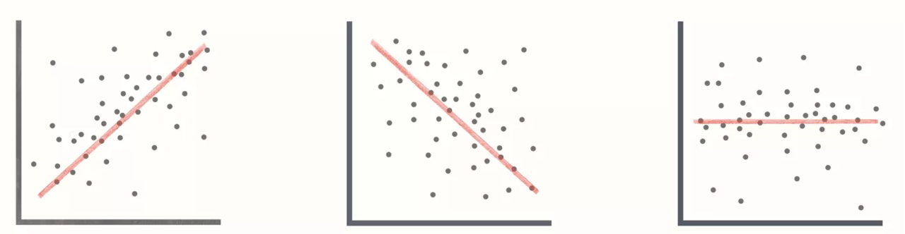
MGMT 30500: Business Statistics
Simple Linear Regression
Overview
- Simple Linear Regression Model
- Least Squares Method
- Coefficient of Determination
- Model Assumptions
- Testing for Significance
- Excel’s Regression Tool
- Using the Estimated Regression Equation for Estimation and Prediction
- Residual Analysis: Validating Model Assumptions
- Outliers and Influential Observations
Association Between Two Variables
Covariance
- The Covariance is a measure of the linear association between two variables.
- Positive values indicate a positive relationship.
- Negative values indicate a negative relationship.
Correlation Coefficient

Correlation is a unit-free measure of linear association and not necessarily causation.
The coefficient can take on values between −1 and +1.
- Values near −1 indicate a strong negative linear relationship.
- Values near +1 indicate a strong positive linear relationship.
The closer the correlation is to zero, the weaker the linear relationship.
Model
What is a model?
All models are wrong, but some are useful.
— George Box
What does it mean to “model” data?
Let’s start with a very simple premise:
- to model, we need to make explicit the conditions under which a variable \(X\) is related to a variable \(Y\).
Let’s begin by giving specific names to these variables:
Dependent Variable (DV): This is our phenomenon of interest, usually denoted as \(Y\).
Independent Variable (IV): This is the phenomenon that explains/describe our dependent variable, generally denoted as \(X\).
What does it mean to “model” data?
Mathematically, we model \(Y\) as a function of \(X\). Statistically, modeling can serve two main purposes:
Prediction: The possibility of using the values of \(X\) to predict the value of \(Y\). There must be a substantive connection between these two variables for one to generate reliable predictions about the values of the other.
Explanation: Used to understand the connection and significance (both substantive and statistical) of the relationship between two variables. In this case, we aim to accurately estimate the impact of one variable on the other, preferably excluding any potential omitted variables.
Motivation: Walmart Carton-Mix Optimization Study
Motivation: Walmart Carton-Mix Optimization Study
Walmart is the world’s largest retailer with over 245 million customers weekly.
In 2000, Walmart launched its online shopping site,
Walmart.com.A network of distribution centers was created in the US to manage packaging for online orders.
Motivation: Walmart Carton-Mix Optimization Study
Carton-Mix Optimization Study
Location: Carrollton, Georgia distribution center.
Objective: Minimize material, labor, and shipping costs by optimizing the size and number of cartons.
Constraints:
- Minimum and maximum carton sizes.
- One-size carton limit for automatically constructed cartons.
Peak Season: November to December, with over 100,000 packages shipped per day.
Motivation: Walmart Carton-Mix Optimization Study
- Data was collected to develop a cost model for optimizing carton mix.
- DV: material cost of a carton in dollars per carton.
- IV: volume of the carton measured in cubic inches per carton.
- Cost Model Formula:
\[ y = -0.11 + 0.0014x \]
Example Calculation:
- Carton volume: 2800 cubic inches
- Estimated material cost: \(y = -0.11 + 0.0014 \times 2800 = 3.81\)
Motivation: Walmart Carton-Mix Optimization Study
Implementation and Results
- The regression model was used in an optimization algorithm in Microsoft Excel to provide Walmart managers a recommendation on the optimal mix of carton sizes to carry at the distribution center.
Results:
First-year savings: $600,000
Estimated annual savings across all distribution centers: $2 million
Simple Linear Regression
Managerial decisions often are based on the relationship between two or more variables.
Regression analysis can be used to develop an equation (as a conjecture) for the relationship between the variables.
- The variable being predicted is called the dependent variable and is denoted by y.
- The variables being used to predict the value of the dependent variable are called the independent variables and are denoted by x.
Simple Linear Regression
Simple linear regression involves one independent variable and one dependent variable.
The relationship between the two variables is linear, approximated by a straight line.
- As an initial estimate of the unknown relationship.
- A regression analysis is a trial-and-error exercise.
Regression analysis involving two or more independent variables is called multiple regression.
Regression Objective
Interpretation: Determine whether variation in the dependent variable can be explained by (the variation of) the independent variable(s) by testing the statistical significance of the independent variable(s):
- As a group (F-test).
- Individually (t-tests).
Prediction: Study how to predict the dependent variable given the information of the independent variable(s).
Applications
- Revenue vs. Advertising expenditure
- Total cost vs. production quantity (variable and fixed costs)
- NFL: Annual revenue vs. estimated team value
- Total points earned vs. hours spent studying
- Number of days absent vs. distance to work
- Number of defective parts vs. line speed
- Maintenance cost vs. age of the equipment
- Sale price of 2007 Camry vs. mileage
- Sales vs. promotion activities and Price
- (Beta risk) Total return of an individual stock vs. total return for the stock market
- Output vs. input
Simple Linear Regression Model
The equation that describes how y is related to x and an error term is called the regression model.
The simple linear regression model for the data is:
\[ y = \beta_0 + \beta_1 x + \epsilon \]
where:
\(\beta_0\) and \(\beta_1\) are the unknown parameters of the model,
\(\epsilon\) is a random variable called the error term (unexplained error), with mean of 0 and unknown error variance \(\sigma^2\).
Simple Linear Regression
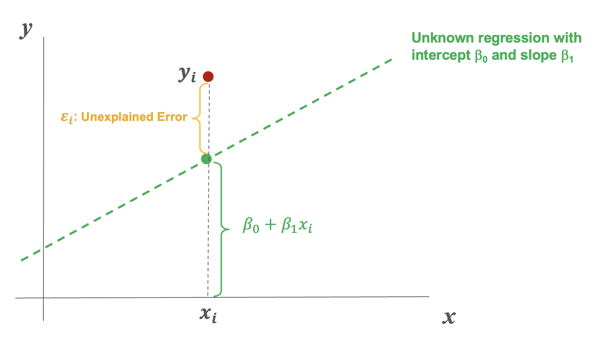
Simple Linear Regression Equation
- The Simple Linear Regression Equation is:
\[ E(y) = \beta_0 + \beta_1 x \]
Graph of the regression equation is a straight line.
- \(E(y)\) is the expected value of y for a given x value
- \(\beta_0\) is the y intercept of the regression line (unknown)
- \(\beta_1\) is the slope of the regression line (unknown)
Simple Linear Regression Equation

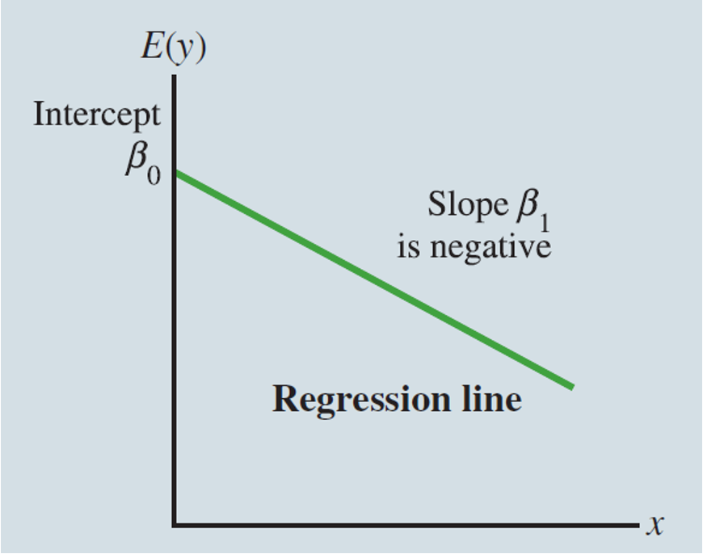

Estimated Simple Linear Regression Equation
The estimated simple linear regression equation:
\[ \hat{y} = b_0 + b_1 x \]
The graph is called the estimated/predicted regression line.
- \(\hat{y}\) is the estimated/predicted value of y for a given x value.
- \(b_0\) is the y-intercept of the line, estimating \(\beta_0\)
- \(b_1\) is the slope of the line, estimating \(\beta_1\)
Random Error (\(\epsilon\)) and Observed Residual (\(e\))

Estimation Process
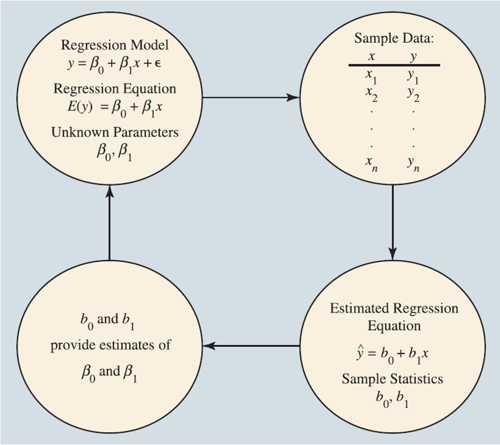
Residuals/Errors
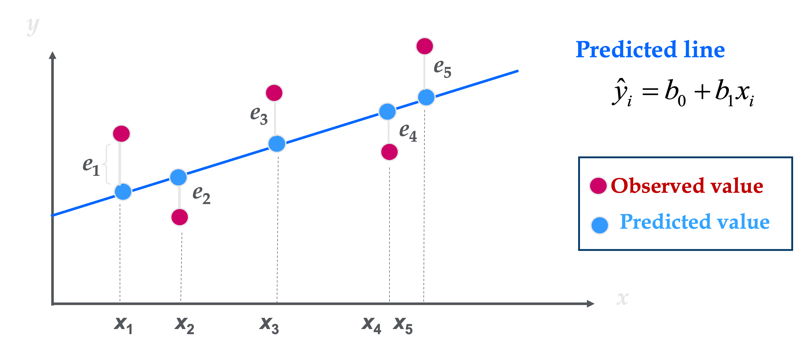
Least Squares Method
Least Squares Method
\(y_i\) = observed value of the dependent variable for the i-th observation.
\(\hat{y}_i\) = estimated value of the dependent variable for the i-th observation.
\[ \text{Error or Residual} = \text{Observed} - \text{Predicted} = y_i - \hat{y}_i \]
- Least Squares Criterion: To minimize the Sum of Squared Errors (SSE)
\[ \min SSE = \min \sum (y_i - \hat{y}_i)^2 = \min \sum (y_i - b_0 - b_1 x_i)^2 \]
Least Squares Method
Slope for the Estimated Regression Equation
\[ b_1 = \frac{\sum (x_i - \bar{x})(y_i - \bar{y})}{\sum (x_i - \bar{x})^2} \]
where:
- \(x_i\) = value of independent variable for i-th observation
- \(y_i\) = value of dependent variable for i-th observation
- \(\bar{x}\) = mean value for independent variable
- \(\bar{y}\) = mean value for dependent variable
Least Squares Method
y-Intercept for the Estimated Regression Equation
\[ b_0 = \bar{y} - b_1 \bar{x} \]
Regression Modeling Steps
- Define problem and propose model
- Make model assumptions
- Collect data
- Do descriptive data analysis
- Obtain the prediction equation and evaluate the model
- Estimate the regression coefficients
- Check adequacy of the overall model
- Test significance of the overall model and the individual independent variables
- Residual Analysis: Validate the model assumptions
- Special issues (in multiple regression)
- Multicollinearity and variables selection
- Special models and transformations (for model-building)
- (Repeat Steps 1-7 if necessary.)
- Prediction, Implementation, …
Linear Regression: Example
Example: Armand’s Pizza Parlor Restaurants
Data was collected from a sample of 10 Armand’s Pizza Parlor Restaurants near college campuses.
For the i-th observation or restaurant in the sample:
- \(x_i\) is the size of the student population
- \(y_i\) is the quarterly sales.
Linear Regression: Example
| Restaurant | Student population (1000s) | Quarterly sales ($1000s) |
|---|---|---|
| 1 | 2 | 58 |
| 2 | 6 | 105 |
| 3 | 8 | 88 |
| 4 | 8 | 118 |
| 5 | 12 | 117 |
| 6 | 16 | 137 |
| 7 | 20 | 157 |
| 8 | 20 | 169 |
| 9 | 22 | 149 |
| 10 | 26 | 202 |
Linear Regression: Example Excel
Example: Armand’s Pizza Parlor Restaurants

Linear Regression: Example
| Metric | Population | Sales |
|---|---|---|
| Mean | 14 | 130 |
| Standard Error | 2.512 | 13.220 |
| Median | 14 | 127.5 |
| Mode | 8 | N/A |
| Standard Deviation | 7.944 | 41.806 |
| Sample Variance | 63.111 | 1747.778 |
| Kurtosis | -1.332 | -0.033 |
| Skewness | 0 | -0.014 |
| Range | 24 | 144 |
| Minimum | 2 | 58 |
| Maximum | 26 | 202 |
| Sum | 140 | 1300 |
| Count | 10 | 10 |
| Confidence Level (95%) | 5.683 | 29.907 |
Linear Regression: Example

Linear Regression: Example Excel
Producing a Scatter Diagram
- Step 1: Select cells B2:C11
- Step 2: Click the Insert tab on the Ribbon
- Step 3: In the Charts group, select Insert Scatter (X,Y) or Bubble Chart
- Step 4: When the list of scatter diagram subtypes appears, select Scatter (chart in upper left corner)
Editing a Scatter Diagram
- Step 1: Click the Chart Title and replace it with Armand’s Pizza Parlors
- Step 2: Click the Chart Elements button
- Step 3: When the list of chart elements appears:
- Click Axis Titles (creates placeholders for titles)
- Click Gridlines (to deselect gridlines option)
- Click Trendline
- Step 4: Click the horizontal Axis Title and replace it with Student population (1000s)
- Step 5: Click the Vertical (Value) Axis Title and replace it with Quarterly Sales ($1000s)
- Step 6: Select the Format Trendline option
- Step 7: When the Format Trendline dialog box appears:
- Select Display equation on chart
- Click the Fill & Line button
- In the Dash type box, select Solid
- Close the Format Trendline dialog box
Linear Regression: Example
| i | \(x_i\) | \(y_i\) | \(x_i - \bar{x}\) | \(y_i - \bar{y}\) | \((x_i - \bar{x})(y_i - \bar{y})\) | \((x_i - \bar{x})^2\) | \((y_i - \bar{y})^2\) |
|---|---|---|---|---|---|---|---|
| 1 | 2 | 58 | -12 | -72 | 864 | 144 | 5184 |
| 2 | 6 | 105 | -8 | -25 | 200 | 64 | 625 |
| 3 | 8 | 88 | -6 | -42 | 252 | 36 | 1764 |
| 4 | 8 | 118 | -6 | -12 | 72 | 36 | 144 |
| 5 | 12 | 117 | -2 | -13 | 26 | 4 | 169 |
| 6 | 16 | 137 | 2 | 7 | 14 | 4 | 49 |
| 7 | 20 | 157 | 6 | 27 | 162 | 36 | 729 |
| 8 | 20 | 169 | 6 | 39 | 234 | 36 | 1521 |
| 9 | 22 | 149 | 8 | 19 | 152 | 64 | 361 |
| 10 | 26 | 202 | 12 | 72 | 864 | 144 | 5184 |
| Total | 140 | 1300 | - | - | 2840 | 568 | 15730 |
Sample correlation:
\[ r_{xy} = \frac{\sum(x_i - \bar{x})(y_i - \bar{y})}{\sqrt{\sum(x_i - \bar{x})^2 \sum(y_i - \bar{y})^2}} = \frac{2840}{\sqrt{568 \times 15730}} = 0.9501 \]
= correl(x-array, y-array)
Linear Regression: Example
- Slope for the Estimated Regression Equation
\[ b_1 = \frac{\sum (x_i - \bar{x})(y_i - \bar{y})}{\sum (x_i - \bar{x})^2} = \frac{2840}{568} = 5 \]
- y-Intercept for the Estimated Regression Equation
\[ b_0 = \bar{y} - b_1 \bar{x} = 130 - 5(14) = 60 \]
- Estimated Regression Equation
\[ \hat{y} = 60 + 5x \]
Remarks
\[ b_1 = \frac{\sum (x_i - \bar{x})(y_i - \bar{y})}{\sum (x_i - \bar{x})^2} = \frac{\sum (x_i - \bar{x})(y_i - \bar{y}) / (n - 1)}{\sum (x_i - \bar{x})^2 / (n - 1)} = \frac{s_{xy}}{s_x^2} \]
\[ = \frac{s_{xy}}{s_x s_y} \cdot \frac{s_y}{s_x} = r_{xy} \frac{s_y}{s_x} \]
\(b_1\), \(s_{xy}\), and \(r_{xy}\) have the same signs, reflecting the relationship’s direction between \(x\) and \(y\).
\(b_1\): Slope of the regression line, indicating the change in \(y\) for a unit change in \(x\).
\(\sum (x_i - \bar{x})(y_i - \bar{y})\): Numerator for covariance, showing the joint deviation of \(x\) and \(y\) from their means.
\(\sum (x_i - \bar{x})^2\): Denominator representing variance of \(x\).
\(s_{xy}\): Sample covariance, indicating how \(x\) and \(y\) vary together.
\(s_x^2\): Sample variance of \(x\), measuring the dispersion of \(x\) around its mean.
\(s_x\) and \(s_y\): Standard deviations of \(x\) and \(y\), showing spread around their means.
\(r_{xy}\): Correlation coefficient, measuring strength and direction of the linear relationship between \(x\) and \(y\).
Partition of Total Variation

Partition of Total Variation
- Prediction equation: \(\hat{y} = 60 + 5x\)
- For Observation #1 \((x = 2, y = 58)\): \(\hat{y} = 60 + 5(2) = 70\)
- Unexplained error/residual = \(y - \hat{y} = 58 - 70 = -12\)
- Note:
\[ y - \bar{y} = (\hat{y} - \bar{y}) + (y - \hat{y}) \]
\[ 58 - 130 = (70 - 130) + (58 - 70) \]
\[ \text{Total} = \text{Explained} + \text{Unexplained} \]
Partition of Total Variation
| \(i\) | \(x_i\) | Observed Y | Predicted Y | Total | Explained | Unexplained |
|---|---|---|---|---|---|---|
| 1 | 2 | 58 | 70 | -72 | -60 | -12 |
| 2 | 6 | 105 | 90 | -25 | -40 | 15 |
| 3 | 8 | 88 | 100 | -42 | -30 | -12 |
| 4 | 8 | 118 | 100 | -12 | -30 | 18 |
| 5 | 12 | 117 | 120 | -13 | -10 | -3 |
| 6 | 16 | 137 | 140 | 7 | 10 | -3 |
| 7 | 20 | 157 | 160 | 27 | 30 | -3 |
| 8 | 20 | 169 | 160 | 39 | 30 | 9 |
| 9 | 22 | 149 | 170 | 19 | 40 | -21 |
| 10 | 26 | 202 | 190 | 72 | 60 | 12 |
| Mean Y | 130 | Sum of square | 15730 | 14200 | 1530 | |
| SST | SSR | SSE |
Derivation of the Total Sum of Squares (SST)
In the context of simple linear regression, the Total Sum of Squares (SST) is defined as the sum of the squared deviations of the observed \(y\) values from their sample mean \(\bar{y}\):
\[ SST = \sum_{i=1}^{n} (y_i - \bar{y})^2. \]
It is also possible to compute the SST with the following:
\[ SST = (n-1)s^2_y, \]
Derivation
Recall that the sample variance of \(y\), denoted \(s^2_y\), is defined as:
\[ s^2_y = \frac{1}{n-1}\sum_{i=1}^{n} (y_i - \bar{y})^2. \]
This definition uses \(n-1\) in the denominator to provide an unbiased estimator of the population variance.
By multiplying both sides of the sample variance definition by \(n-1\), we obtain:
\[ (n-1)s^2_y = \sum_{i=1}^{n} (y_i - \bar{y})^2. \]
Recognizing that the right-hand side is exactly the definition of \(SST\), we conclude:
\[ SST = (n-1)s^2_y. \]
Thus, the derivation relies on the definition of sample variance, and the result follows directly from the algebraic manipulation.
Coefficient of Determination
Coefficient of Determination
- Relationship Among SST, SSR, SSE
\[ \text{SST} = \text{SSR} + \text{SSE} \]
\[ \sum(y_i - \bar{y})^2 = \sum(\hat{y}_i - \bar{y})^2 + \sum(y_i - \hat{y}_i)^2 \]
\[ \text{Degrees of freedom:} \quad n-1 \quad\quad\quad\quad\quad 1 \quad\quad\quad\quad\quad n-2 \quad\quad\quad\quad\quad\quad\quad\quad\quad \]
where:
- SST = total sum of squares (Total variation)
- SSR = sum of squares due to regression (Explained variation)
- SSE = sum of squares due to error (Unexplained variation)
Coefficient of Determination
- The coefficient of determination is:
\[ R^2 = \frac{\text{Explained variation}}{\text{Total variation}} = \frac{\text{SSR}}{\text{SST}} \]
where:
- SSR = sum of squares due to regression
- SST = total sum of squares
Coefficient of Determination
Example: Armand’s Pizza Parlor Restaurants
\[ R^2 = \frac{\text{SSR}}{\text{SST}} = \frac{14200}{15730} = 0.9027 = 90.27\% \]
\[ R^2 = 1 - \frac{\text{SSE}}{\text{SST}} = 1 - \frac{1530}{15730} = 1 - 0.973 = 90.27\% \]
- The regression relationship is very strong;
- 90.27% of the variability in the sales can be explained by (the variability of) the size of the student population through the proposed linear relationship between them.
Coefficient of Determination: Excel
Adding \(R^2\) Value to Scatter Diagram
- Step 1: Right-click on the trendline and select the Format Trendline option
- Step 2: When the Format Trendline dialog box appears:
- Select Display R-squared on chart
- Close the Format Trendline dialog box

Sample Correlation Coefficient
\[ r_{xy} = (\text{sign of } b_1) \sqrt{\text{Coefficient of Determination}} \]
\[ r_{xy} = (\text{sign of } b_1) \sqrt{R^2} \]
where:
- \(b_1\) = the slope of the estimated regression equation \(\hat{y} = b_0 + b_1x\)
Only in simple regression.
Sample Correlation Coefficient
Example: Armand’s Pizza Parlor Restaurants
\[ r_{xy} = (\text{sign of } b_1) \sqrt{R^2} \]
The sign of \(b_1\) in the equation \(\hat{y} = 10 + 5x\) is “+”.
\[ r_{xy} = +\sqrt{0.9027} \]
\[ r_{xy} = +0.9501 \]
Model Assumptions
Assumptions About the Error Term \(\epsilon\)
The error term \(\epsilon\) is a random variable with a mean or expected value of zero; that is, \(E(\epsilon) = 0\).
- Implication: \(\beta_0\) and \(\beta_1\) are constants; therefore \(E(\beta_0) = \beta_0\) and \(E(\beta_1) = \beta_1\); thus, for a given value of \(x\), the expected value of \(y\) is:
\[ E(y) = \beta_0 + \beta_1x \]
The variance of \(\epsilon\), denoted by \(\sigma^2\), is the same for all values of \(x\).
- Implication: The variance of \(y\) about the regression line equals \(\sigma^2\) and is the same for all values of \(x\).
The values of \(\epsilon\) are independent.
- Implication: The value of \(\epsilon\) for a particular value of \(x\) is not related to the value of \(\epsilon\) for any other value of \(x\); thus, the value of \(y\) for a particular value of \(x\) is not related to the value of \(y\) for any other value of \(x\).
The error term \(\epsilon\) is a normally distributed random variable for all values of \(x\).
- Implication: Because \(y\) is a linear function of \(\epsilon\), \(y\) is also a normally distributed random variable for all values of \(x\).
Assumptions About the Error Term \(\epsilon\)
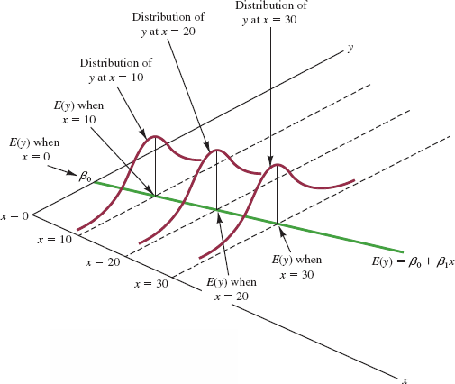
Testing for Significance
Testing for Significance
To test for a significant regression relationship, we must conduct a hypothesis test to determine whether the unknown \(\beta_1\) is zero.
Two equivalent Tests are commonly used in simple regression:
- \(t\) Test
- \(F\) test
- \(t\) Test
Both the \(t\) test and \(F\) test require an estimate of the unknown error variance \(\sigma^2\).
Testing for Significance
Idea: Estimating the population error variance (\(\sigma^2\)) by the sample residual variance (denoted by \(s^2\) or MSE).
The mean square error (MSE), or \(s^2\) is:
\[ s^2 = \text{MSE} = \frac{\text{SSE}}{(n-2)}, \quad \text{SSE = Sum of Squared Errors (unexplained variation).} \]
where:
\[ \text{SSE} = \sum e_i^2 = \sum (y_i - \hat{y}_i)^2 \]
Testing for Significance
- An Estimate of \(\sigma\)
- To estimate \(\sigma\), we take the square root of \(s^2\).
- The resulting \(s\) is called the standard error (of the estimate).
\[ s = \sqrt{MSE} = \sqrt{\frac{SSE}{n - 2}} = \sqrt{\frac{\sum (y_i - \hat{y}_i)^2}{n - 2}} \]
Testing for Overall Significance: \(F\) Test
Hypotheses
\[ H_0 : \beta_1 = 0 \quad\] The proposed linear model is insignificant; No linear relationship; the predictor is insignificant; the predictor explains no variation in the response.
\[ H_a : \beta_1 \neq 0 \]
Test Statistic
\[ F = \frac{SSR / 1}{SSE / (n-2)} = \frac{MSR}{MSE} \quad \text{follows } F(1, n-2), \text{ if } H_0 \text{ is true.} \] where
- SSR (Sum of Squares for Regression): measures how much of the variation in the dependent variable is explained by the independent variable(s).
- MSR (Mean Square Regression): is the average variation explained by the model per degree of freedom for the regression.In the case above, we have only one independent variable as the degree of freedom for the regression (denominator).
- SSE (Sum of Squares for Error/Residuals): measures the variation in the response variable that is not explained by the model.
- MSE (Mean Square Error): is the average variation that remains unexplained by the model, per degree of freedom for the error. The degrees of freedom for the error is the number of observations (\(n\)) in the data set minus the number of parameters being estimated (\(\beta_0\) and \(\beta_1\)).
Testing for Overall Significance: \(F\) Test
Decision Rules (right-tail):
- Reject \(H_0\) if \(p\text{-value} \leq \alpha\), or \(F \geq F_{\alpha, 1, n-2}\)
where:
\(F_{\alpha, 1, n-2}\) is based on an \(F\) distribution with 1 degree of freedom in the numerator and \(n - 2\) degrees of freedom in the denominator.
\(F_{\alpha, 1, n-2} = F.\text{INV}(1-\alpha, 1, n - 2)\)
Testing for Overall Significance: \(F\) Test
- Compute the value of the test statistic.
\[ F = \frac{SSR / 1}{SSE / (n-2)} = \frac{14,200 / 1}{1,530 / (10-2)} = 74.25 \]
Decision.
\(F_{\alpha} = F.\text{INV}(0.99,1,8) = 11.26\) and \(F = 74.25 > 11.26.\) We reject \(H_0.\)
\(p\text{-value} = 1 - F.\text{DIST}(74.25,1,8, \text{TRUE}) \approx 0.000 < 1\% = \alpha\)
The statistical evidence is sufficient to conclude that a significant relationship exists between the size of the student population and quarterly sales. The significance level is \(\alpha = 1\%\).
Testing for Individual Significance: \(t\) Test
In regression, \(b_1\) follows a normal distribution with mean \(\beta_1\).
Hypotheses
\(H_0 : \beta_1 = 0 \quad (\text{Independent variable x is insignificant})\)
\(H_a : \beta_1 \neq 0\)
Test Statistic
\[ t = \frac{b_1 - 0}{s_{b_1}}, \] where \(s_{b_1}\) is the standard error of the slope estimate \(b_1\), i.e., an estimate of the standard deviation of the sampling distribution of \(b_1\). It is not the population standard deviation; it is the estimated uncertainty in the slope due to sampling. It follows \(t(n-2)\), if \(H_0\) is true.
\[ s_{b_1} = \frac{s}{\sqrt{\sum(x_i - \bar{x})^2}} = \frac{\sqrt{\frac{\sum (y_i - \hat{y}_i)^2}{n - 2}}}{\sqrt{\sum(x_i - \bar{x})^2}}= \sqrt{\frac{\sum (Y_i - \hat{Y}_i)^2}{(n - 2)\,\sum (X_i - \bar{X})^2}} \]
if we denote \(\text{MSE} = \frac{\sum (Y_i - \hat{Y}_i)^2}{n - 2}\) (the mean squared error), then:
\[ s_{b_1} = \sqrt{\frac{\text{MSE}}{\sum (X_i - \bar{X})^2}}. \]
Testing for Individual Significance: \(t\) Test
Decision Rules (two-tail):
- Reject \(H_0\) if \(p\text{-value} \leq \alpha\)
- Reject \(H_0\) if \(t \leq -t_{\alpha/2,n-2}\) or \(t \geq t_{\alpha/2,n-2}\) (i.e., \(|t| > t_{\alpha/2,n-2}\))
where the critical value, \(t_{\alpha/2, n-2}\), is based on a \(t\) distribution with \(n - 2\) df.
Testing for Individual Significance: \(t\) Test
- Compute the value of the test statistic:
\[
t = \frac{b_1 - 0}{s_{b_1}} = \frac{5 - 0}{.5803} = 8.62
\]
Decision:
- \(t_{0.01/2, 8} = T.\text{INV}(0.995,8) = 3.355\) provides an area of 0.005 in the upper tail of a \(t\)-distribution with \(n-2\) degrees of freedom.
- Because \(|t| = 8.62 > 3.355\), we can reject \(H_0\) at \(\alpha = 1\%\).
- \(p\text{-value} = 2*(1-T.\text{DIST}(8.62,10-2,\text{TRUE})) \approx 0.000< 1\%\).
We can reject \(H_0\).
Confidence Interval for \(\beta_1\)
We can use a 99% confidence interval for \(\beta_1\) to test the hypotheses just used in the t test.
\(H_0\) is rejected if the hypothesized value of \(\beta_1\) is not included in the corresponding confidence interval for \(\beta_1\).
Confidence Interval for \(\beta_1\)
- The form of a confidence interval for \(\beta_1\) is:
\[ b_1 \pm t_{\alpha/2, n-2} s_{b_1} \]
where:
- \(b_1\) is the point estimator,
- \(t_{\alpha/2, n-2} s_{b_1}\) is the margin of error (MOE),
- \(t_{\alpha/2, n-2}\) is the t critical value providing an upper-tail area of \(\alpha/2\) in a t distribution with \(n-2\) degrees of freedom.
- \(s_{b_1}\) is the standard error of the slope estimate \(b_1\), i.e., an estimate of the standard deviation of the sampling distribution of \(b_1\). It is not the population standard deviation; it is the estimated uncertainty in the slope due to sampling.
Confidence Interval for \(\beta_1\)
- 99% Confidence Interval for \(\beta_1\):
\[ b_1 \pm t_{\alpha/2} s_{b_1} = 5 \pm 3.355(.5803) = 5 \pm 1.95 \]
or 3.05 to 6.95
- Conclusion: 0 is not included in the 99% confidence interval. Reject \(H_0\) at \(\alpha\) = 1%.
Some Cautions about the Interpretation of Significance Tests
Rejecting \(H_0: \beta_1 = 0\) and concluding that the relationship between x and y is significant does not enable us to conclude that a cause-and-effect relationship is present between x and y.
Because we are able to reject \(H_0: \beta_1 = 0\) and demonstrate statistical significance does not enable us to conclude that there is a linear relationship between x and y.
Excel’s Regression Tool
Excel’s Regression Tool
Excel also has a comprehensive tool in its Data Analysis package called Regression.
The Regression tool can be used to perform a complete regression analysis.
Using Excel’s Regression Tool
Step 1 Click the DATA tab on the Ribbon
Step 2 In the Analyze group, click Data Analysis
Step 3 Choose Regression from the list of Analysis Tools
Step 4 When the Regression dialog box appears:
- Enter C1:C11 in the Input Y Range box
- Enter B1:B11 in the Input X Range box
- Select the check box for Labels
- Select the check box for Confidence Level
- Enter 99 in the Confidence Level box
- Select Output Range
- Enter A13 in the Output Range box
- Click OK
Using Excel’s Regression Tool
Example: Armand’s Pizza Parlors: Regression tool dialog box

Using Excel’s Regression Tool
Example: Armand’s Pizza Parlors: Regression tool dialog box

Using Excel’s Regression Tool
Regression Statistics:
Multiple R: 0.9501. Indicates a strong positive correlation between observed and predicted values.
R Square (Coefficient of Determination): Approximately 90.27% of the variance in the dependent variable (Sales) is explained by the independent variable (Population).
Adjusted R Square: 0.8906. Adjusts the R Square for the number of predictors, providing a more accurate measure.
Standard Error: 13.8293. Measures the typical distance that the observed values fall from the regression line.
ANOVA
- Regression SS: 14200. Variability explained by the model.
- Residual SS: 1530. Variability not explained by the model.
- F-Statistic: 74.2484. Indicates the model is statistically significant.
- Significance F: 2.55E-05. \(p\)-value indicating strong evidence against the null hypothesis.
Model Results
Coefficients:
- Intercept: 60 (p-value: 0.0002)
- Population: 5 (p-value: 2.55E-05)
- Both coefficients are statistically significant.
- Intercept: 60 (p-value: 0.0002)
Confidence Intervals:
- 95% CI for Intercept: [38.7247, 81.2753]
- 95% CI for Population: [3.6619, 6.3381]
Using the Estimated Regression Equation for Estimation and Prediction
Using the Estimated Regression Equation for Estimation and Prediction
A confidence interval is an interval estimate of the mean of all values of \(y\) for a given value of \(x\).
A prediction interval is used whenever we want to predict an individual value of \(y\) for a new randomly-chosen observation corresponding to a given value of \(x\).
The given \(x\)-value is denoted by \(x^*\) , and the corresponding point estimate is obtained from the estimated regression equation:
\[ \hat{y}^* = b_0 + b_1 x^* \]
- The margin of error (MOE) is larger for a prediction interval.
Using the Estimated Regression Equation for Estimation and Prediction
- Confidence Interval Estimate of the mean, \(E(\hat{y}^*)\):
\[ \hat{y}^* \pm t_{\alpha/2, n-2} s_{\hat{y}^*} \]
- Prediction Interval Estimate of individual \(\hat{y}^*\):
\[ \hat{y}^* \pm t_{\alpha/2, n-2} s_{pred} \]
where:
- confidence coefficient is \(1-\alpha\) and \(t_{\alpha/2, n-2}\) is based on a t distribution with \(n-2\) degrees of freedom.
Point Estimation
Example: Armand’s Pizza Parlors
To predict quarterly sales or expected quarterly sales of restaurants near a campus or campuses with 10,000 students (\(x* = 10\)),
\[ \hat{y}^* = 60 + 5(10) = 110 \]
Predicted quarterly sales of $110,000
Sums of Squares
| \(i\) | \(x_i\) | \(y_i\) | \(x_i - \bar{x}\) | \(y_i - \bar{y}\) | \((x_i - \bar{x})(y_i - \bar{y})\) | \((x_i - \bar{x})^2\) | \((y_i - \bar{y})^2\) |
|---|---|---|---|---|---|---|---|
| 1 | 2 | 58 | -12 | -72 | 864 | 144 | 5184 |
| 2 | 6 | 105 | -8 | -25 | 200 | 64 | 625 |
| 3 | 8 | 88 | -6 | -42 | 252 | 36 | 1764 |
| 4 | 8 | 118 | -6 | -12 | 72 | 36 | 144 |
| 5 | 12 | 117 | -2 | -13 | 26 | 4 | 169 |
| 6 | 16 | 137 | 2 | 7 | 14 | 4 | 49 |
| 7 | 20 | 157 | 6 | 27 | 162 | 36 | 729 |
| 8 | 20 | 169 | 6 | 39 | 234 | 36 | 1521 |
| 9 | 22 | 149 | 8 | 19 | 152 | 64 | 361 |
| 10 | 26 | 202 | 12 | 72 | 864 | 144 | 5184 |
| Total | 140 | 1300 | 2840 | 568 | 15730 |
Confidence Interval for \(E(\hat{y}^*)\)
Estimate of the Standard Deviation of \(\hat{y}^*\):
\[ s_{\hat{y}^*} = s \sqrt{\frac{1}{n} + \frac{(x^* - \bar{x})^2}{\sum (x_i - \bar{x})^2}} \]
\[ = 13.829 \sqrt{\frac{1}{10} + \frac{(10 - 14)^2}{568}} \]
\[ = 13.829 \sqrt{.1282} = 4.95 \]
Confidence Interval for \(E(\hat{y}^*)\)
95% confidence interval of the mean quarterly sales for all Armand’s restaurants located near campuses with 10,000 students is
\[ \hat{y}^* \pm t_{\alpha/2} s_{\hat{y}^*} \]
\[ 110 \pm 2.306(4.95) \]
\[ 110 \pm 11.415, \text{ or } \$98,585 \text{ to } \$121,415 \]
We are 95% confident that the mean quarterly sales for all Armand’s restaurants located near campuses with 10,000 students falls between $98,585 and $121,415.
Confidence Interval for \(E(\hat{y}^*)\)
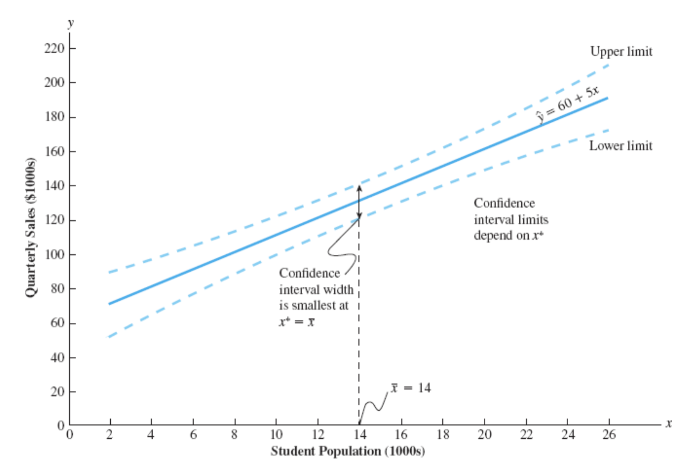
Prediction Interval for \(y^*\)
Estimate of the Standard Deviation of an Individual Value of \(y^*\)
\[ s_{pred} = s \sqrt{1 + \frac{1}{n} + \frac{(x^* - \bar{x})^2}{\sum (x_i - \bar{x})^2}} \]
\[ s_{pred} = 13.829 \sqrt{1 + \frac{1}{10} + \frac{(10 - 14)^2}{568}} \]
\[ = 13.829 \sqrt{1.282} = 14.69 \]
Prediction Interval for \(y^*\)
95% prediction interval for quarterly sales for the new Armand’s restaurant located near a campus with 10,000 students is
\[ \hat{y}^* \pm t_{\alpha/2} s_{pred} \]
\[ 110 \pm 2.306(14.69) \]
\[ 110 \pm 33.875, \text{ or } \$76,125 \text{ to } \$143,875 \]
If we randomly select one Armand’s restaurant located near a campus with 10,000 students, we are 95% confident that its quarterly sales will be between $76,125 and $143,875.
Prediction Interval for \(y^*\)
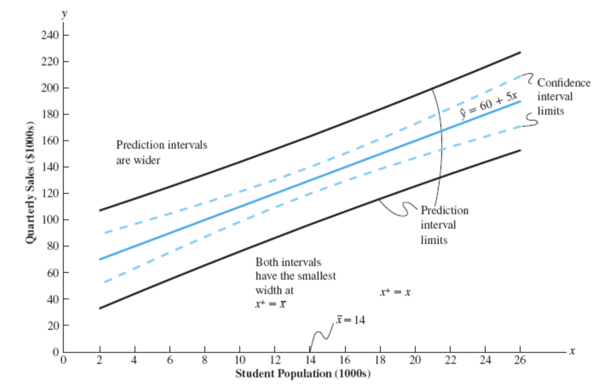
Residual Analysis: Validating Model Assumptions
Residual Analysis: Validating Model Assumptions
If the assumptions about the error term \(\epsilon\) appear questionable, the hypothesis tests about the significance of the regression relationship and the interval estimation results may not be valid.
The residuals provide the best information about \(\epsilon\).
Residual for observation \(i\)
\[ y_i - \hat{y}_i \]
- Much of the residual analysis is based on an examination of graphical plots.
Model Assumptions and Validation Procedures with Diagnosis Plots
\(E(\epsilon) = 0\).
- Validation procedure: A plot of residuals against the predicted values of the dependent variable \(y\).
The variance of \(\epsilon\), denoted by \(\sigma^2\), is the same for all values of \(x\).
- Validation procedure: A plot of the residuals against values of the independent variable \(x\).
The values of \(\epsilon\) are independent.
- Validation procedure: A standardized residual plot.
The error term \(\epsilon\) has a normal distribution.
- Validation procedure: A normal probability plot.
Residual Plot Against \(x\)
If the assumption that the variance of \(\epsilon\) is the same (constant) for all values of \(x\) is valid, and the assumed regression model is an adequate representation of the relationship between the variables, then the residual plot should give an overall impression of a horizontal band of points.


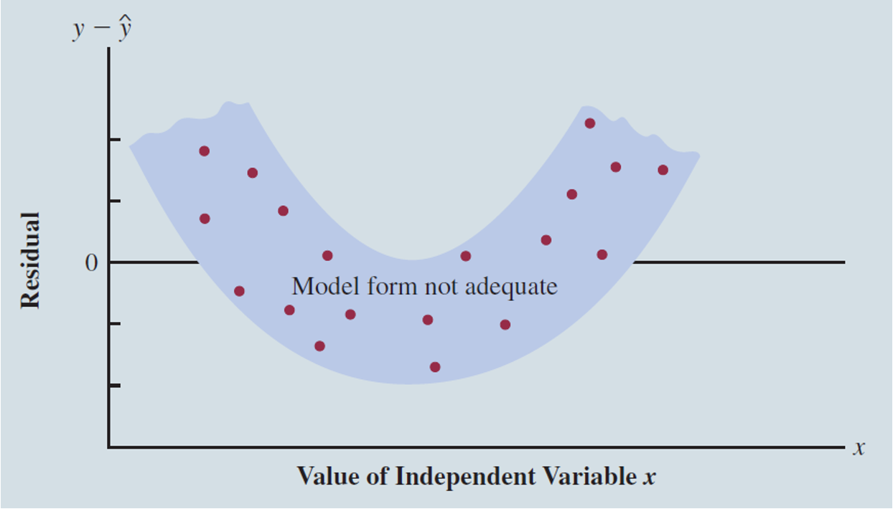
Residual Plot Against \(x\)
Example: Armand’s Pizza Parlors
| Student Population (\(x_i\)) | Sales (\(y_i\)) | Predicted sales \(y_i = 60 + 5(x_i)\) | Residuals (\(y_i - \hat{y_i}\)) |
|---|---|---|---|
| 2 | 58 | 70 | -12 |
| 6 | 105 | 90 | 15 |
| 8 | 88 | 100 | -12 |
| 8 | 118 | 100 | 18 |
| 12 | 117 | 120 | -3 |
| 16 | 137 | 140 | -3 |
| 20 | 157 | 160 | -3 |
| 20 | 169 | 160 | 9 |
| 22 | 149 | 170 | -21 |
| 26 | 202 | 190 | 12 |
Residual Plot Against \(x\)
Example: Armand’s Pizza Parlors
Plot of the residuals against the independent variable \(x\).

- The residuals appear to approximate the horizontal pattern in Panel A.
- Based on this subjective evaluation, we conclude that the residual plot does not provide evidence that the assumptions made for Armand’s regression model should be challenged.
- We can be confident that Armand’s simple regression model is valid.
Residual Plot Against \(x\) - Excel
Using Excel to Produce a Residual Plot
The steps outlined earlier to obtain the regression output are performed with one change.
When the Regression dialog box appears, we must also select the Residual Plot option.
The output will include two new items:
- A plot of the residuals against the independent variable, and
- A list of predicted values of \(y\) and the corresponding residual values.

Residual Plot Against \(\hat{y}\)
Example: Armand’s Pizza Parlors
Plot of the residuals against the independent variable \(\hat{y}\).

- The pattern of this residual plot is the same as the pattern of the residual plot against the independent variable \(x\).
- It is not a pattern that would lead us to question the model assumptions.
- For simple linear regression, both the residual plot against \(x\) and the residual plot against \(\hat{y}\) provide the same pattern.
- For multiple regression analysis, the residual plot against \(\hat{y}\) is more widely used because of the presence of more than one independent variable.
Standardized Residuals
- Standardized Residual for Observation \(i\)
\[ \frac{y_i - \hat{y_i}}{s_{y_i - \hat{y_i}}} \]
where \(s_{y_i - \hat{y_i}}\) is the standard deviation of residual \(i\)
\[ s_{y_i - \hat{y_i}} = s \sqrt{1 + h_i} \] where \(s\) is the standard error of the estimate
\[ h_i = \frac{1}{n} + \frac{(x_i - \bar{x})^2}{\sum (x_i - \bar{x})^2} \]
Standardized Residual Plot
The standardized residual plot can provide insight about the assumption that the error term \(\epsilon\) has a normal distribution.
If this assumption is satisfied, the distribution of the standardized residuals should appear to come from a standard normal probability distribution.
- Empirical rule applies.
Standardized Residual
Example: Armand’s Pizza Parlors
| Observation | Predicted sales \(y_i = 60 + 5(x_i)\) | Residuals (\(y_i - \hat{y_i}\)) | Standardized Residual |
|---|---|---|---|
| 1 | 70 | -12 | -1.0792 |
| 2 | 90 | 15 | 1.2224 |
| 3 | 100 | -12 | -.9487 |
| 4 | 100 | 18 | 1.4230 |
| 5 | 120 | -3 | -.2296 |
| 6 | 140 | -3 | -.2296 |
| 7 | 160 | -3 | -.2372 |
| 8 | 160 | 9 | .7115 |
| 9 | 170 | -21 | -1.7114 |
| 10 | 190 | 12 | 1.0792 |
Standardized Residual Plot
Example: Armand’s Pizza Parlors

- All of the standardized residuals are between -2 and +2 indicating that there is no reason to question the assumption that ε has a normal distribution.
Using Excel to construct a Standardized Residual Plot
Example: Armand’s Pizza Parlors
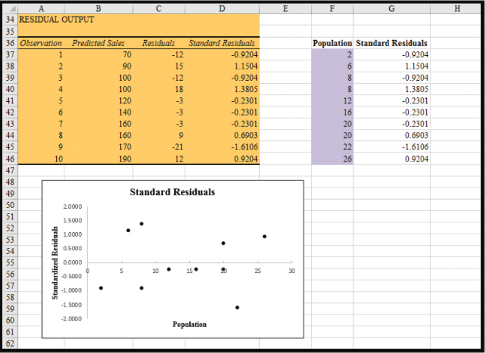
Normal Probability Plot
Another approach for determining the validity of the assumption that the error term has a normal distribution.
To show how a normal probability plot is developed, we introduce the concept of normal scores:
Suppose 10 values are selected randomly from a normal probability distribution with a mean of zero and a standard deviation of one, and that the sampling process is repeated over and over with the values in each sample of 10 ordered from smallest to largest. For now, let us consider only the smallest value in each sample. The random variable representing the smallest value obtained in repeated sampling is called the first-order statistic.
For samples of size 10 from a standard normal probability distribution, the expected value of the first-order statistic is -1.55. This expected value is called a normal score. For the case with a sample of size \(n = 10\), there are 10 order statistics and 10 normal scores (next slide). In general, a data set consisting of \(n\) observations will have \(n\) order statistics and hence \(n\) normal scores.
Normal Scores: are expected values of the order statistics from a standard normal distribution.
Normal Probability Plot
Normal Scores for \(n = 10\)
| Order Statistic | Normal Score |
|---|---|
| 1 | -1.55 |
| 2 | -1.00 |
| 3 | -0.65 |
| 4 | -0.37 |
| 5 | -0.12 |
| 6 | 0.12 |
| 7 | 0.37 |
| 8 | 0.65 |
| 9 | 1.00 |
| 10 | 1.55 |
Normal Probability Plot
To determine whether the standardized residuals for Armand’s Pizza Parlors appear to come from a standard normal probability distribution.
We order the 10 standardized residuals in parallel with the 10 normal scores:
| Normal Scores | Ordered Standardized Residuals |
|---|---|
| -1.55 | -1.7114 |
| -1.00 | -1.0792 |
| -0.65 | -0.9487 |
| -0.37 | -0.2372 |
| -0.12 | -0.2296 |
| 0.12 | -0.2296 |
| 0.37 | 0.7115 |
| 0.65 | 1.0792 |
| 1.00 | 1.2224 |
| 1.55 | 1.4230 |
Interpreting the Normal Probability Plot: If the normality assumption is satisfied, the smallest standardized residual should be close to the smallest normal score, the next smallest standardized residual should be close to the next smallest normal score, and so on.
Normal Probability Plot
A plot with the normal scores on the horizontal axis and the corresponding standardized residuals on the vertical axis, the plotted points should cluster closely around a 45-degree line passing through the origin if the standardized residuals are approximately normally distributed.

- The points are grouped closely about the line. Therefore, we can conclude that the assumption of the error term having a normal probability distribution is reasonable.
- In general, the more closely the points are clustered about the 45-degree line, the stronger the evidence supporting the normality assumption. Any substantial curvature in the normal probability plot is evidence that the residuals have not come from a normal distribution.
Outliers and Influential Observations
Outliers
An outlier is a data point (observation) that does not fit the trend shown by the remaining data. Represent observations that are suspect and warrant careful examination.
Erroneous Data
Investigate the source of the outlier to identify any errors in data collection or entry.
Correct the data point if possible, or remove it if the correct value cannot be determined.
Violation of Model Assumptions
Use diagnostic tools to check if the outlier violates the assumptions of simple regression.
Consider alternative models, such as transformations or robust regression methods, if the assumptions are violated.
Legitimate but Unusual Observations
Recognize that some outliers are natural occurrences and represent rare events.
Retain these outliers in the analysis to reflect the true variability in the data.
Report and interpret the presence of these outliers in the context of the study.
Detecting Outliers
For the case of simple linear regression, one can often detect outliers by simply examining the scatter diagram.
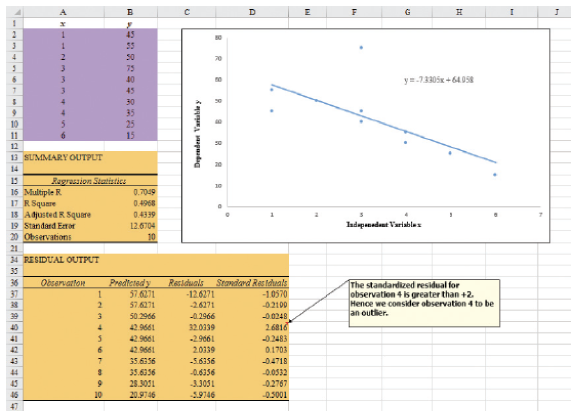
Given the pattern of the rest of the data, we would have expected \(y_4\) to be much smaller and hence would consider observation 4 to be an outlier.
Detecting Outliers with Standardized Residuals
If an observation deviates greatly from the pattern of the rest of the data, the corresponding standardized residual will be large in absolute value.
Any observation with a standardized residual of less than -2 or greater than +2 is a potential outlier. With normally distributed errors, standardized residuals should be outside these limits approximately 5% of the time.
In the residual output section in the Figure we see that the standard residual value for observation 4 is 2.68.
Detecting Outliers
The identification of the outlier enables us to correct the data error and improve the regression results. This is the result with \(y_4 = 30\).

- Now, no standard residuals are less than -2 or greater than +2.
- The value of \(R^2\) has increased from 0.4968 to 0.8380
- The value of \(b_0\) has decreased from 64.95 to 59.23.
- The slope of the line has changed from -7.330 to -6.949.
Influential Observations
An influential observation is an observation that has a strong influence on the regression results.
An influential observation may be an outlier, it may correspond to an \(x\) value far from its mean, or it may be caused by a combination of a somewhat off-trend \(y\) value and a somewhat extreme \(x\) value.
If the observation is valid, it can contribute to a better understanding of the appropriate model and can lead to a better estimated regression equation.
Detecting Influential Observations
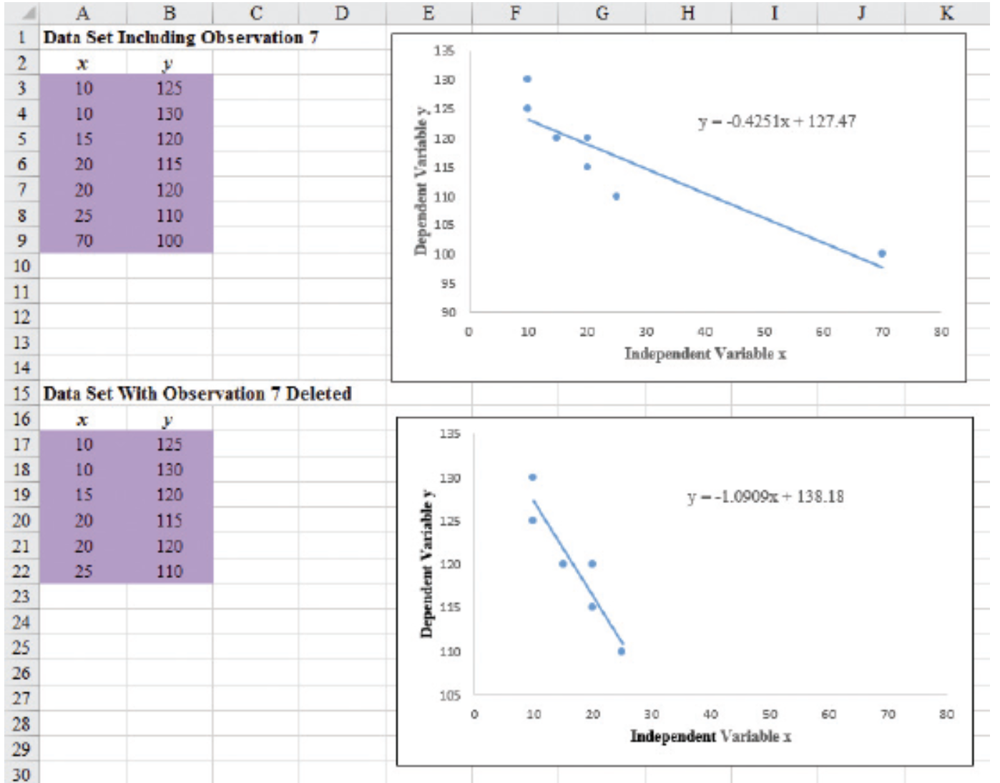
With observation 7 deleted,
The value of \(b_0\) has increased from 127.4 to 138.1.
The slope of the line has changed from -0.425 to -1.090.
Detecting Influential Observations
High Leverage Points: Observations with extreme values for the independent variable. Observation 7 in the data set shown is a point with high leverage.
The leverage of an observation is determined by how far the value of the independent variable is from its mean value.
For the single-independent-variable case, the leverage of the \(i\)th observation, denoted \(h_i\), can be computed using:
\[ h_i = \frac{1}{n} + \frac{(x_i - \bar{x})^2}{\sum (x_i - \bar{x})^2} \]
From the formula, farther \(x_i\) is from its mean \(\bar{x}\), the higher the leverage of observation \(i\).
Detecting Influential Observations
For the data shown, the leverage of observation 7 is as follows:
\[ h_i = \frac{1}{n} + \frac{(x_i - \bar{x})^2}{\sum (x_i - \bar{x})^2} = \frac{1}{7} + \frac{(70 - 24.286)^2}{2621.43} = 0.94 \]
For simple linear regression, we consider observations as having high leverage if \(h_i > \frac{6}{n}\). For the example, \(\frac{6}{n} = \frac{6}{7} = 0.86\).
Thus, because \(h_i = 0.94 > 0.86\), observation 7 would be identified as having high leverage.
Notes and Comments:
The number 6 in the criterion \(h_i > \frac{6}{n}\) is an arbitrary rule of thumb used to identify high leverage points in linear regression. Some statisticians use \(\frac{2p}{n}\), where \(p\) is the number of predictors plus one (for the intercept) in the model.
Once an observation is identified as potentially influential because of a large residual or high leverage, its impact on the estimated regression equation should be evaluated.
More advanced texts discuss diagnostics for doing so. However, if one is not familiar with the more advanced material, a simple procedure is to run the regression analysis with and without the observation. This approach will reveal the influence of the observation on the results.
Summary
Summary
Some key takeaways from this session:
Simple Linear Regression Model: Helps to understand the linear relationship between two variables—predicting the Dependent Variable (\(Y\)) based on the Independent Variable (\(X\)).
- This method is foundational for exploring how variables are related and how changes in one variable can predict changes in another.
Model Interpretation and Assumptions: It is essential to interpret the regression coefficients and validate model assumptions to ensure that the model is reliable.
- Assumptions include linearity, independence, homoscedasticity (constant variance), and normality of residuals.
Residual Analysis: Residual plots and other diagnostic tools are critical for validating the assumptions of the regression model and ensuring its accuracy.
- Proper validation techniques prevent misinterpretation of data and help maintain the integrity of the analysis.
Comments
Prediction intervals for individuals are wider than the corresponding confidence intervals for means.
Two \(x\)-values with the same distance to the \(\bar{x}\), their corresponding confidence intervals have the same width (and hence, the same margin of error). True also for the prediction intervals.
The confidence interval is wider when the given \(x\) is further away from the \(\bar{x}\) – It is more difficult to predict for outlying \(x\)’s.